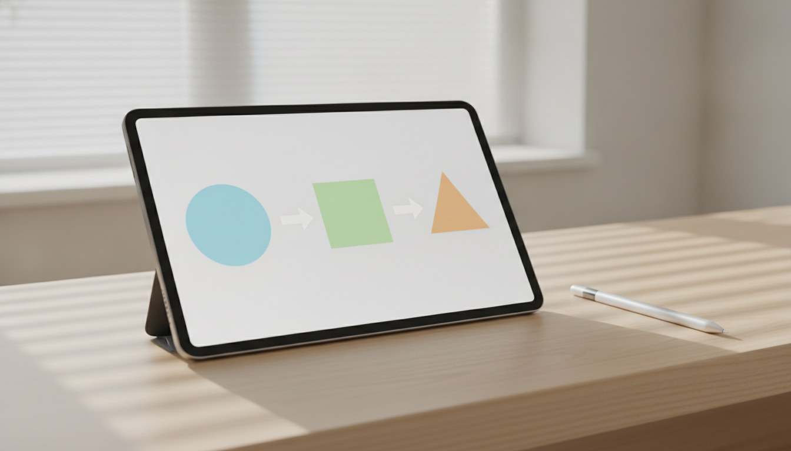

How to Offer Semaglutide in a Chiropractic Practice: A Plain-English Guide
If you have heard that chiropractic practices are adding GLP-1 weight-loss programs and wondered how that is even possible when you cannot write prescriptions, this guide walks through exactly how the model works, step by step, in plain language. Semaglutide and tirzepatide reach the patient, your practice keeps the relationship, and licensed providers handle the prescribing.

The short version is this: in the turnkey model, your practice does not become a pharmacy and you do not start prescribing drugs. Instead, you partner with a program that supplies the three pieces a chiropractic office is missing. An independent network of licensed medical providers, MDs and nurse practitioners, evaluates each patient and writes the prescription through telemedicine. A licensed 503A compounding pharmacy fills semaglutide or tirzepatide and ships it directly to the patient's door. And a software layer ties the intake, scheduling, labs, and follow-ups together so you are not juggling fax machines and spreadsheets.
What stays yours is the part that matters most to a practice owner: your brand on the program, your pricing, and your ongoing relationship with the patient who already trusts you. You are essentially the front door and the steady point of contact, while the clinical and pharmacy work happens behind a compliant wall built by people licensed to do it. The rest of this guide answers the practical how questions one at a time, because once you see the flow laid out, the model stops sounding complicated. For the full picture of how a chiropractic practice actually bolts this on — the model, the programs, and the economics — see see how the GLP-1 program works.
The Whole Flow at a Glance
Here is the journey end to end. A patient mentions weight loss, or you offer the program, and you refer them into your branded enrollment page. They complete a digital intake questionnaire that captures their history, medications, and goals, and they get baseline labs done, usually at a local draw site. A licensed provider in the network reviews the intake and labs and meets the patient by telemedicine, by video or sometimes a phone consult depending on state rules. If the patient is a good candidate and there are no red flags, the provider writes a prescription for either semaglutide or tirzepatide. That prescription routes to the partner 503A compounding pharmacy, which fills it and ships the medication straight to the patient, typically as a multi-week supply with syringes and dosing instructions. From there the provider manages titration, side effects, and refills through scheduled follow-up visits. Your role is the human one: you enrolled them, you answer everyday questions, and you keep them engaged. You are not in the prescribing or dispensing chain at any point, which is exactly what keeps the arrangement clean.
Questions Practices Ask Before Adding a GLP-1 Program
Before a peptide or GLP-1 track goes live inside a practice, the questions owners raise most often are:
- How can I offer semaglutide if I cannot legally prescribe it?
- Who actually evaluates the patient and writes the prescription?
- How does the patient get the medication, and from where?
- What is the real difference between semaglutide and tirzepatide?
- What does the program include, and what do I have to provide?
- How quickly can my practice realistically go live?
- What does each visit and follow-up actually look like for the patient?
Each is worked through on the pages here. For the turnkey model itself — licensed providers, 503A pharmacy, and how you keep your brand — the resource we point practices to is explore the full program details.
So, How Does It Really Work?
Strip away the jargon and the model is a clean division of labor. You bring the patient relationship and the brand. A separate network of licensed providers brings the medical judgment and the prescription. A 503A pharmacy brings the actual semaglutide or tirzepatide and ships it. Software stitches the steps together so the experience feels like one program even though several licensed parties are involved. You never touch a prescription pad or a vial, which is the point: the people doing the prescribing and dispensing are licensed to do it, and you stay in your lane as the trusted local practice. If you can picture referring a patient, answering their everyday questions, and keeping your name on the program, you already understand the heart of how it works.
Where to Read More
- Key Topics — the business model, compliance, sourcing, and the peptides that come up most in practices
- Patient Scenarios — where peptides and GLP-1s fit a patient's goals, and when to refer
- FAQ — direct answers to the common questions
- About this resource — who publishes this information
Related Reading
- The GLP-1 Candidacy Review — see also
- The Chiropractic GLP-1 Desk — additional context here
- FDA safety information on medicines containing semaglutide — background from a third-party source
This site is an independent editorial resource for chiropractors and chiropractic practices on offering peptide therapy and GLP-1 medical weight loss as a partner program. It is general business and educational information, not medical, legal, or financial advice, and does not establish any provider relationship. Chiropractors do not prescribe — all clinical decisions, prescribing, and dispensing are handled by independent licensed providers and pharmacies. Rules vary by state; verify current requirements with qualified counsel and your providers.